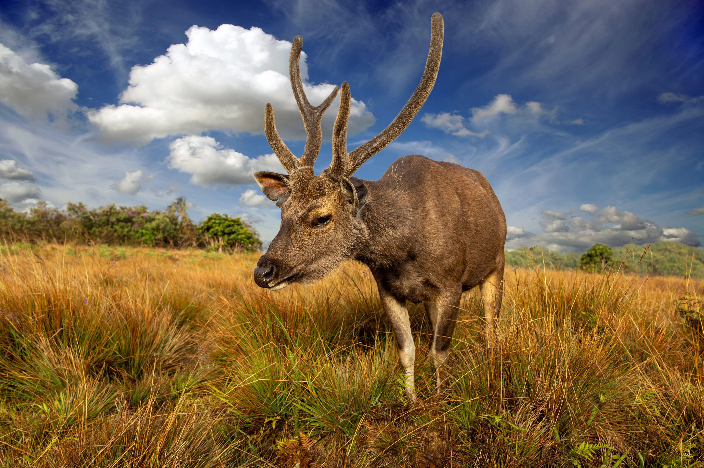
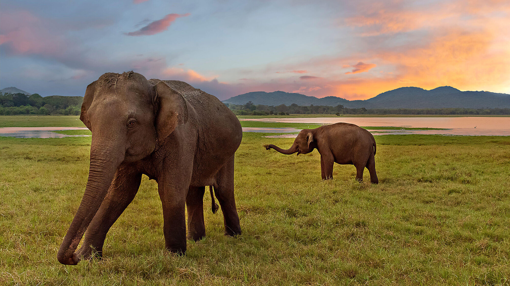

Home
SL Wildlife Introduction
Department of Wildlife Conservation
SL Leopard
Animals in Sri Lanka
LOGIN
wildlife sri lanka

- Name: Sri Lankan leopard
- Scientific name: Panthera pardus kotiya
- status: Vulnerable

- Name: Red slender loris
- Scientific name: Loris tardigradus
- Conservation status: Endangered

- Name:sr lankan samabr deer
- Scientific name:Rusa unicolor unicolor
- Conservation status: Least concerned
The amaizing biodiversity of Sri Lanka
Best places to expirience this vast diversity
- Sinharaja Forest Reserve
- Horton Plains National Park
- Pigeon Ishland National Park